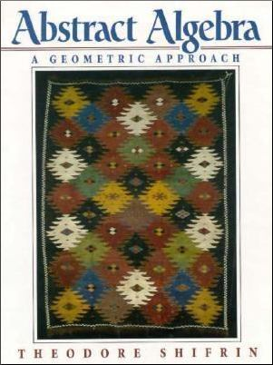

MATH 4000/6000: Modern Algebra & Geometry I
MWF 10:10 AM-11:00 AM, Marine Sciences/Dance Bldg, Room 304
318 Boyd Graduate Studies Building
MW 11:10 AM-12:10 PM
Th 1-2 PM
and by appointment
Assignments and other course material
- Final exam study guidePDF
- Solutions to practice problems for Exam #3PDF
- Exam #3 reviewPDF
- Homework assignment #7due 11/16PDF
- Exam #2 reviewPDF
- Homework assignment #6due 10/19PDF
- Homework assignment #5due 10/10PDF
- Exam #1 review sheetPDF
- Homework assignment #4due 9/19PDF
- Homework assignment #3due 9/12PDF
- Homework assignment #2due 9/2PDF
- Homework assignment #1due 8/26PDF
- Handout on properties of the integersPDF
Semester-to-date summary (reverse chronological order)
- 12/5 Computation of $[\mathbb{Q}[\sqrt{2},\sqrt[3]{3}]:\mathbb{Q}]$. Quick tour of constructibility, including impossibility of "doubling the cube".
- 12/2 Exam #3.
- 11/30 Examples of dimension. Definition of the degree $[K:F]$ of a field extension. $[K:F]=1$ $\Longleftrightarrow$ $K=F$. If $K= F[\alpha]$ where $\alpha$ is algebraic of degree $n$, then $[K:F]=n$, and in fact $1,\alpha,\dots,\alpha^{n-1}$ is a basis for $K$ over $F$. Start of discussion of the degree of $\mathbb{Q}[\sqrt{2},\sqrt[3]{3}]$ over $\mathbb{Q}$. Statement of the multiplicative property of degrees in a tower of field extensions.
- 11/28Review of linear algebra: Definition of a vector space over an arbitrary field $F$. Subspaces. $\mathrm{Span}(\textbf{v}_1,\dots,\textbf{v}_k)$. Finite dimensionality. Linear independence. Bases. Existence of bases for finite dimensional vector spaces; every basis has the same number of elements (called the dimension of $V$ over $F$).
- 11/18Review of how WT2.0 implies the existence of splitting fields. Proof of WT2.0.
- 11/16Completion of the proof that $F[x]/\langle f(x)\rangle$ is a field if and only if $f(x)$ is irreducible in $F[x]$. Statement of goal theorem on existence of splitting fields. Proof of the weaker theorem that if $f(x) \in F[x]$ is irreducible, there is a field $M \supset F$ in which $f$ has a root. (And example of $\mathbb{Z}_2[x]/\langle x^2+x+1\rangle$.) Statement of weaker theorem 2.0: that for any nonconstant $f(x) \in F[x]$, there is a field $M\supset F$ over which $f$ splits. Deduction of goal theorem from weaker theorem 2.0.
- 11/14Three examples of the fundamental homomorphism theorem. Statement that $F[x]/\langle f(x)\rangle$ is a field if and only if $f(x)$ is irreducible in $F[x]$; start of proof.
- 11/7--11/11 Substitute --- Professor Chastkofsky.
- 11/4 If $K/F$ is a field extension and $\alpha \in K$ is algebraic over $F$, then $\ker(\mathrm{ev}_{\alpha}) = \langle p(x)\rangle$ for some irreducible polynomial $p(x) \in F[x]$; moreover, $p(x)$ can be chosen to be any irreducible polynomial that vanishes at $\alpha$. Examples. Definition of congruence mod $I$. Congruence mod $I$ is an equivalence relation and respects $+$ and $\cdot$. Definition of the quotient ring $R/I$. Statement that $\mathbb{Z}_m = R/I$ when $R=\mathbb{Z}$ and $I=m\mathbb{Z}$. Worked example of $\mathbb{Z}_{6}/\langle 2\rangle$.
- 11/2 Proof that all ideals of $\mathbb{Z}$ are principal. Definition of $\langle x_1,\dots, x_n\rangle$ and the fact that this is always an ideal. Sketch of the proof that $F[x]$ is a principal ideal ring. Proof that an ideal of $F[x]$ containing an irreducible polynomial $p(x)$ is either $\langle p(x)\rangle$ or $\langle 1\rangle = F[x]$.
- 10/31 Definition of a ring homomorphism. Examples. Definition of the kernel. The kernel of a ring homomorphism is an ideal. Statement that all ideals of $\mathbb{Z}$ have the form $m\mathbb{Z}$, for some integer $m$.
- 10/28 Fall Break.
- 10/26 Midterm #2.
- 10/24 Statement of Eisenstein's general irreducibility criterion; examples. Proof of Gauss's lemma.
- 10/21 Gauss's lemma. Irreducibility of $x^4+1$. Irreducibility of $3x^3+x+10001$ by reduction mod $2$. If $f(x)$ is a nonconstant polynomial in $\mathbb{Z}[x]$ with leading coefficient not divisible by $p$ and with the reduction of $f(x)$ mod $p$ irreducible in $\mathbb{Z}_p[x]$, then $f(x)$ is irreducible in $\mathbb{Q}[x]$. Irreducibility of $x^{2016}-7$ in $\mathbb{Q}[x]$ (as an example of Eisenstein's method).
- 10/19 Description of the splitting field of $x^2+x+1$ over $\mathbb{Z}_2$. Start of discussion of tests for irreducibility. Statement and proof of the rational root test.
- 10/17 If $\alpha \in K$ is algebraic over $F$, then $\alpha$ is the root of an irreducible polynomial $p(x) \in F[x]$. If $\alpha \in K$ is the root of the irreducible polynomial $p(x) \in F[x]$, then for $f(x) \in F[x]$, one has $f(\alpha)=0 \Longleftrightarrow p(x) \mid f(x)$. Proof that $F[\alpha]$ is a field whenever $\alpha$ is algebraic over $F$. Definition of what it means for a polynomial to split over a field $F$. Definition of a splitting field. A nonconstant polynomial over $\mathbb{Q}$ always has a splitting field (as a consequence of the fundamental theorem of algebra).
- 10/14 Definition of the term subfield. Definition of $F[\alpha]$, where $F$ is a subfield of $K$ and $\alpha \in K$. $F[\alpha]$ is a ring. $F[\alpha]$ is the smallest subring of $K$ containing $F$ and $\alpha$. Definition of what it means for $\alpha$ to be algebraic over $F$. Statement that $F[\alpha]$ is a field if and only if $\alpha$ is algebraic over $F$.
- 10/12 Completion of the proof of Euclid's lemma in $F[x]$. A polynomial in $\mathbb{C}[x]$ has all its roots in $\mathbb{C}$ (factors completely into linear factors). Motivating discussion: What is the smallest field containing $\mathbb{Q}$ in which $x^2-2$ has all its roots?
- 10/10 More on gcds of polynomials, including the existence of a unique monic gcd for each pair $a(x), b(x) \in F[x]$ (not both 0). Definition of irreducible polynomials. Relation between irreducibility and having roots. Statement of Euclid's lemma. If $a(x) | b(x) c(x)$ and $a(x)$ and $b(x)$ are relatively prime, then $a(x) \mid c(x)$.
- 10/7 No class. Read the proof of the Fundamental Theorem of Algebra in §3.2 of your textbook. The same proof is presented with more details in the first 3 pages of these notes by Isaiah Lankham, Bruno Nachtergaele, Anne Schilling.
- 10/5 The remainder theorem for dividing by $x-c$. The root-factor theorem. Euclid's algorithm in $F[x]$. Properties of the last nonzero remainder in Euclid's algorithm. Definition of the gcd in $F[x]$.
- 10/3 Definition of $R[x]$. $R[x]$ is a commutative ring. Definition of the degree of a polynomial. If $R$ is a domain, then $R[x]$ is a domain, and $\deg(fg) = \deg(f) +\deg(g)$ for all nonzero polynomials $f$ and $g$. Statement of the division algorithm in $F[x]$, where $F$ is a field. Examples of the division algorithm in action.
- 9/30 Reduction of the general cubic equation to one of the form $w^3+pw+q=0$. Solution to cubic equations of the form $w^3+pw+q=0$ via the "magic substitution" $w=v-\frac{p}{3v}$. Statement (but no proof) that $w^3+pw+q=0$ has three distinct roots if and only if $\frac{q^2}{4}+ \frac{p^3}{27} \ne 0$.
- 9/28 Determination of the complex $n$th roots of $1$ and the $n$th roots of $w$ for any of nonzero complex number $w$. Statement of the fundamental theorem of algebra. Solution of linear and quadratic equations.
- 9/26 Definition of $\mathbb{C}$ via ordered pairs. Geometric interpretation of addition of complex numbers as vector addition. Definition of the complex absolute value. Proof that $|zw| = |z||w|$. Proof that every nonzero complex number can be written in polar form: $z= r(\cos\theta+i\sin\theta)$, where $r = |z|$ and $\theta \in \mathbb{R}$.
- 9/23 Exam #1.
- 9/21 Completion of discussion of how $\mathbb{Z}$ embeds into any ordered domain. Proof that $\mathbb{Q}$ embeds into $\mathbb{R}$ (and in fact, into any ordered field).
- 9/19 Diagnosing the problem with $\mathbb{Q}$ (failure of the monotone convergence theorem). Definition/characterization of $\mathbb{R}$ as an ordered field for which monotone convergence holds. Review of our convention for interpreting $n \in \mathbb{Z}$ as an element of an arbitrary ring $R$. Start of discussion of why $\mathbb{Z}$ "lives inside" every ordered domain.
- 9/16Rules for manipulating inequalities. Proof that $\alpha^2>0$ for all nonzero $\alpha$, in any ordered domain. In any ordered field $F$, for any $\alpha < \beta$ in $F$, there is a $\gamma\in F$ with $\alpha < \gamma< \beta$. There is no element of $\mathbb{Q}$ that squares to $2$. Preliminary discussion of what we want from the real numbers.
- 9/14$\mathbb{Q}$ "sits inside" $\mathbb{Z}$. Every element of $\mathbb{Q}$ has the form $ab^{-1}$, where $a, b \in \mathbb{Z}$. How to view $\mathbb{Z}$ as a subset of $\mathbb{Q}$. Definition of an ordered domain. $\mathbb{Q}$ is ordered, with $\mathbb{Q}^{+} = \{a/b: a,b \in\mathbb{Z}, b \ne 0, ab >0\}$.
- 9/12Definition of $\mathbb{Q}$ as the set of fractions, up to cross multiplication equivalence. Definition of $+$ and $\cdot$ on $\mathbb{Q}$, and verification that these are well-defined operations. Proof that $\mathbb{Q}$ is a field. Discussion of what it means for $\mathbb{Z}$ to sit inside $\mathbb{Q}$.
- 9/9The (uninteresting) zero ring. Comparison of $\mathbb{Z}_3$ and $\mathbb{Z}_4$. Definition of an integral domain. $\mathbb{Z}_m$ is an integral domain $\Longleftrightarrow$ $m$ is a prime number. Definition of a field and of multiplicative inverses. Every field is an integral domain. $\mathbb{Z}_m$ is a field $\Longleftrightarrow$ $m$ is a prime number.
- 9/7Definition of $\mathbb{Z}_m$. Verification that $+$ and $\cdot$ are well-defined operations on $\mathbb{Z}_m$. Spot check that $\mathbb{Z}_m$ satisfies the "algebraic axioms" of $\mathbb{Z}$. Definition of a ring. Examples of results true in every ring; e.g., $a\cdot 0=0$ in every ring, and the binomial theorem is true in every commutative ring.
- 9/5Labor Day (no class).
- 9/2Uniqueness of the solution to simultaneous congruences when $\gcd(m_1,m_2)=1$. Numerical examples, including ones with $>2$ congruences or with moduli not pairwise coprime. Definition of $\bar{a}$ (equivalence class of $a$ with respect to congruence mod $m$); list of the 4 distinct classes when $m=4$.
- 8/31Solving linear congruences $ax\equiv b\pmod{m}$ when $\gcd(a,m)=1$. How to proceed when $\gcd(a,m)>1$. Introduction to simultaneous congruences, including the existence of an $x$ with $x\equiv a_1\bmod{m_1}$ and $x\equiv a_2\bmod{m_2}$ whenever $\gcd(m_1,m_2)=1$.
- 8/29Middle binomial coefficients ${p\choose k}$ are multiples of $p$, for $p$ prime. Proof of Fermat's little theorem ($a^p\equiv a\pmod{p}$). Calculation of $2^{91}\bmod{91}$ as a proof that $91$ is not prime. Existence of the inverse of $c$ modulo $m$ when $\gcd(c,m)=1$. Can cancel $c$ from $ac\equiv bc\pmod{m}$ when $\gcd(c,m)=1$.
- 8/26Every integer is congruent modulo $m$ to exactly one of $0,1,2,\dots, m-1$. Congruence mod $m$ is an equivalence relation. Congruence mod $m$ respects addition and multiplication. Sample applications.
- 8/24Statement of unique factorization. Existence of factorizations. Euclid's lemma. Uniqueness of factorizations. Definition of $a\equiv b\pmod{m}$.
- 8/22Euclidean algorithm. If $a\mid bc$ and $\gcd(a,b)=1$, then $a\mid c$.
- 8/19Proof of the binomial theorem. Even/odd integers. The division algorithm (and its proof). Definition of $a$ divides $b$ (written $a\mid b$) and basic properties.
- 8/17Properties of inequalities. $1$ is the smallest element of $\mathbb{Z}^{+}$. Proof of the Principle of Mathematical Induction. Definition of exponentiation; laws of exponents. Statement of the binomial theorem.
- 8/15Statement of well ordering principle (WOP), nontriviality. Basic proofs: Uniqueness of additive and multiplicative identites, uniqueness of additive inverses, $a\cdot 0 = 0, (-1)a=-a, -(-a)=a$.
- 8/12Review of syllabus, properties of $\mathbb{Z}$
Course synopsis
At this point in your mathematical career, you have accumulated a wealth of experience computing with integers, real numbers, and complex numbers. These items are so familiar to you that they may even have the appearance of being God-given --- as if understanding those objects is What Mathematics is All About.
Abstract algebra challenges this notion. Integers, real numbers, and complex numbers are indeed fantastic, but they are fantastic not because they are handed down from on high, but because they have a rich and (presumably) consistent theory with useful consequences. And given how useful these objects are, we are compelled to isolate (and consider in the abstract) their most important properties. Once we do so, we find that there are many other objects with the same sorts of interesting properties. For example, we will see that the integers are an example of what is called a ring, while the real numbers and complex numbers are fields. These more abstract-seeming objects are not just interesting in an intellectual let's-talk-about-this-over-coffee kind of way, but understanding them deeply often leads to a new understanding of the objects of original interest.
Let me give one concrete example: Some primes, like 5, can be written as a sum of two squares: $5 = 1^2 + 2^2$. And other primes, like 3, cannot. The question of when this is possible is a question about the integers. But our answer to this question --- and we will answer it by the end of the semester --- will require us to visit a totally different mathematically system, the ring of Gaussian integers.
Textbook (required)
-

Abstract Algebra: A Geometric Approach
We will aim to cover Chapters 1--4 and to start Chapter 5. For further adventures in Algebra-land, I encourage you to take MATH 4010 in the Spring.
Homework/ Exams/ Grading
There will be three hour-long in-class exams, as well as a final exam.
- Midterm #1: Friday, September 23
- Midterm #2: Wednesday, October 26
- Midterm #3: Friday,
November 18December 2 - Final exam: Monday, December 12, 8 AM-11 AM, location TBA
No make-up exams will be given. The final exam is cumulative. Your grade is made up of the following weighted components:
- Each midterm: 15% (total of 45%)
- Homework: 25%
- Final exam: 30%
This class falls into the interactive lecture genre (not entirely unrelated to the practice of call and response in a liturgical context). What this means is that I intend to punctuate the lectures frequently with questions for you. For the show to go on, class participation is absolutely essential. Since you cannot participate in class if you are not present in class, your attendance is required. In particular, more than four unexcused absences may result in you being automagically withdrawn from the class. Of course, missing class is sometimes a necessity; keep me posted whenever you have a conflict and we should not have any issues.
Homework will be collected roughly once each week. As a general rule, late homework assignments are not accepted. Your lowest HW score will be dropped at the end of the semester.
All exams are closed book and closed notes.
Students enrolled in MATH 6000 will take the same exams as the students in MATH 4000 but will be assigned additional homework problems.
You are not only allowed, but encouraged to collaborate with your classmates on the homework assignments. The joy of mathematical discovery was meant to be shared! Having said that, collaboration does not mean copying. You may not copy solutions from a textbook, classmate, website, etcetera, and you must be the one to handwrite (or type) your solutions. By entering UGA, you have already agreed to abide by the UGA honor code described in detail at https://ovpi.uga.edu/academic-honesty/academic-honesty-policy. A good rule of thumb is that you should be able to explain any work you turn in to a hypothetical interrogator.
Special accommodations
Students with disabilities who may require special accommodations should talk to me as soon as possible. Appropriate documentation concerning disabilities may be required. For further information, please visit the Disabilities Resource Center page.
Disclaimer
The course syllabus is a general plan for the course; deviations announced to the class by the instructor may be necessary.